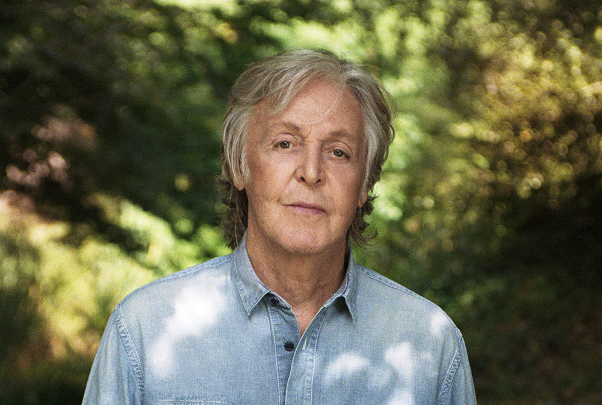

 "And, in the end the love you take is equal to the love you make."
TIMELINE
1957–1960: The Quarrymen
At the age of fifteen on 6 July 1957, McCartney met John Lennon and his band, the Quarrymen, at the St Peter's Church Hall fête in Woolton
1960–1970: The Beatles
In August 1965, the Beatles released the McCartney composition "Yesterday", featuring a string quartet. Included on the Help! LP, the song was the group's first recorded use of classical music elements and their first recording that involved only a single band member.
1970–1981: Wings
As the Beatles were breaking up in 1969–70, McCartney fell into a depression. His wife helped him pull out of that condition by praising his work as a songwriter and convincing him to continue writing and recording. In her honour, he wrote "Maybe I'm Amazed"
1982–1990
McCartney collaborated with Stevie Wonder on the Martin-produced number-one hit "Ebony and Ivory", included on McCartney's Tug of War LP, and with Michael Jackson on "The Girl Is Mine" from Thriller.